Identita domu
Budova c.k. státního reálného gymnázia (pohlednice P-000045, P-000593 „K.K. STAATS-OBERREALGYMNASIUM“), později průmyslová škola a muzeum („budova nynějšího muzea čp. 1360“ na kartách 1918). Třípodlažní, vysoká valbová střecha s velkým štítem a řadou vikýřů, věžička. Foto cp_1360_001 (1960s).
Použité prameny: cp_1360_001 PLANE+PHOTO; pohlednice P-000045(_2), P-000327(_2), P-000593, P-001040, P-001453.
GIS: GIS id 2937 (2440 m², 22 vrcholů). V oblasti „Cs_Armady“ je dům veden podruhé se stejnými přílohami.
Prameny (10 příloh)
Všechny přílohy domu v databázi Libuše, každá otevřená a zapsaná v plan_search.json. Stav rešerše plánů: found; situační/střešní náčrt (ruční, nekótovaný, PLANE,BW) – není stavební výkres; půdorysné rozměry z GIS nebo odhad. Kliknutím otevřete větší náhled.

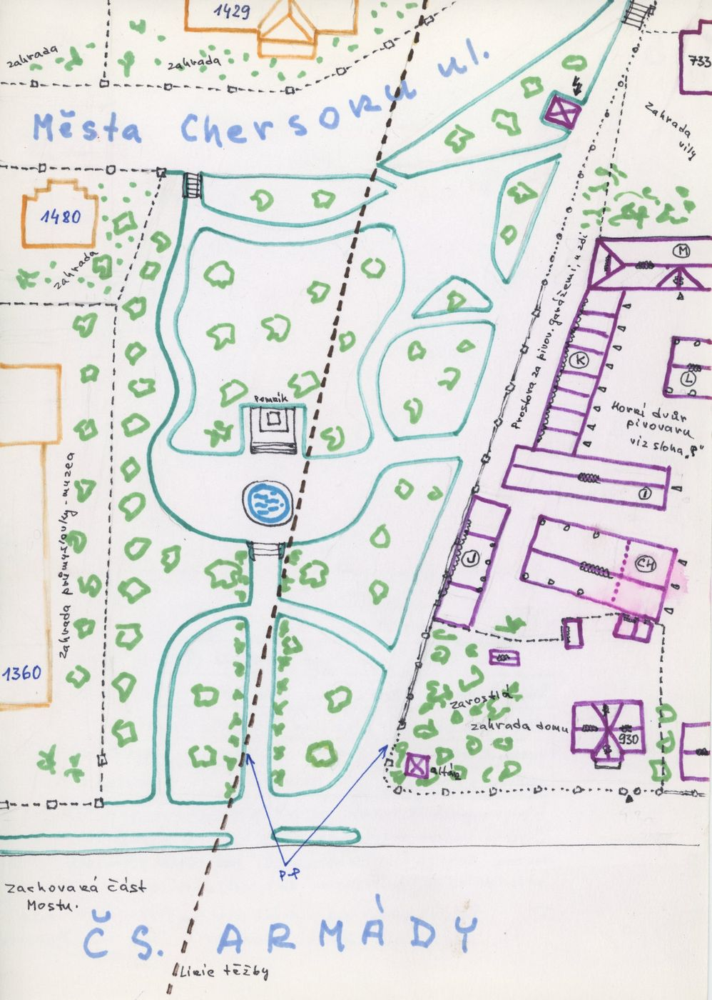
situační náčrt
SHA-256 403c4f43b3a5…

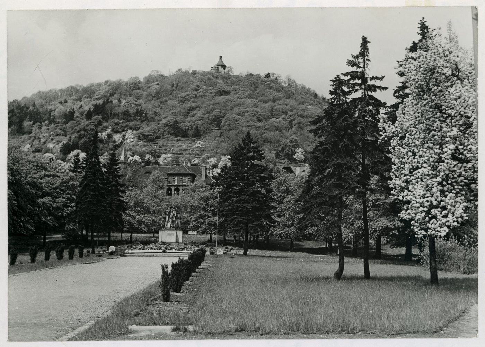
fotografie
SHA-256 a3e7e9b1d3a4…

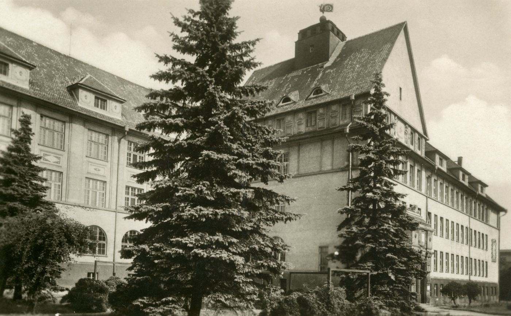
pohlednice
SHA-256 fbc32bedbe41…

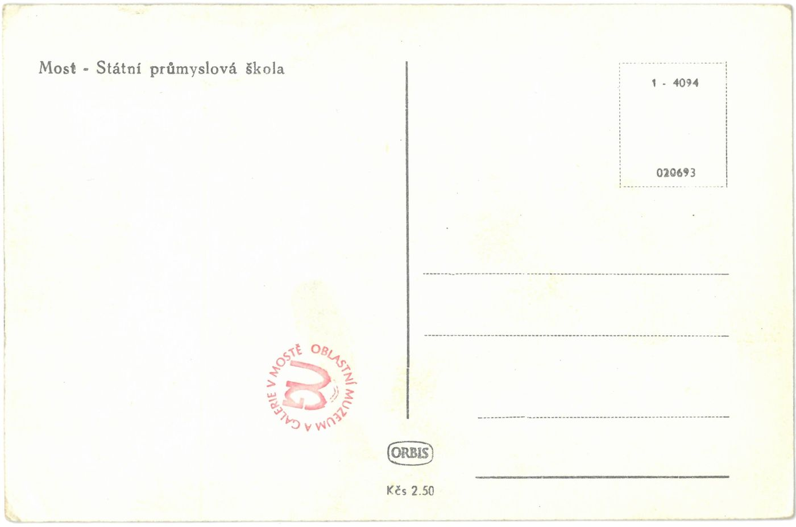
pohlednice
SHA-256 e31e43780bb6…

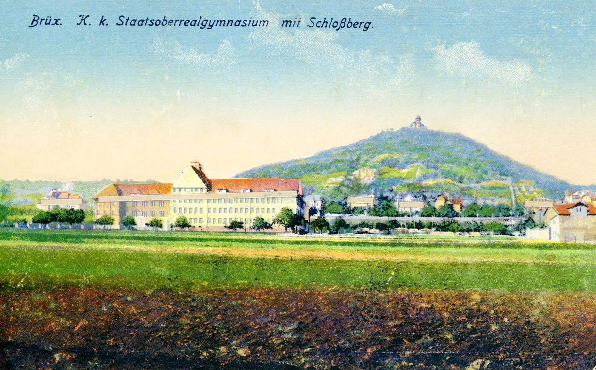
pohlednice
SHA-256 48323f60078f…

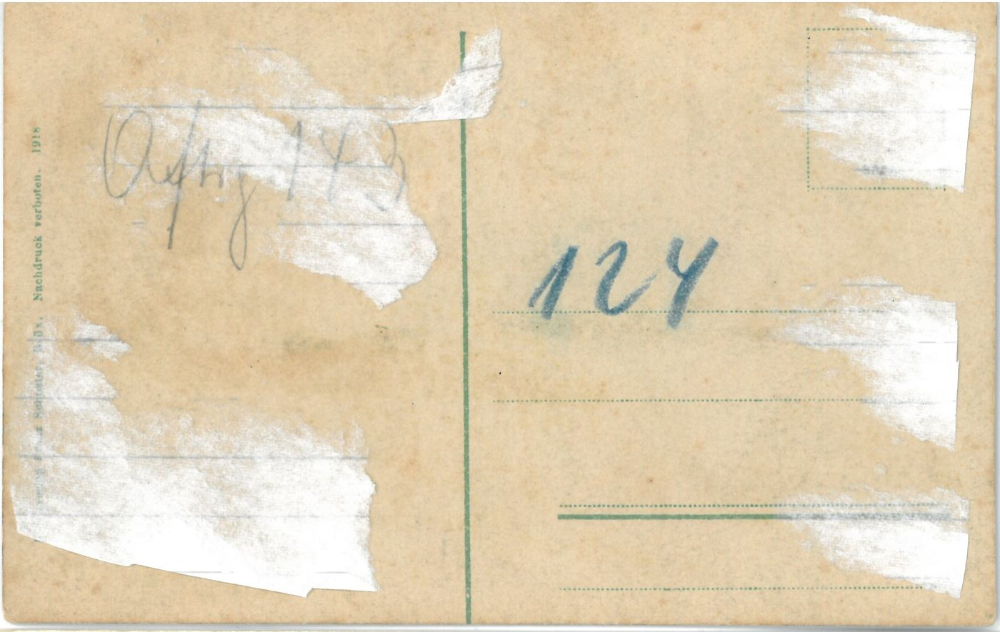
pohlednice
SHA-256 a96b76474887…

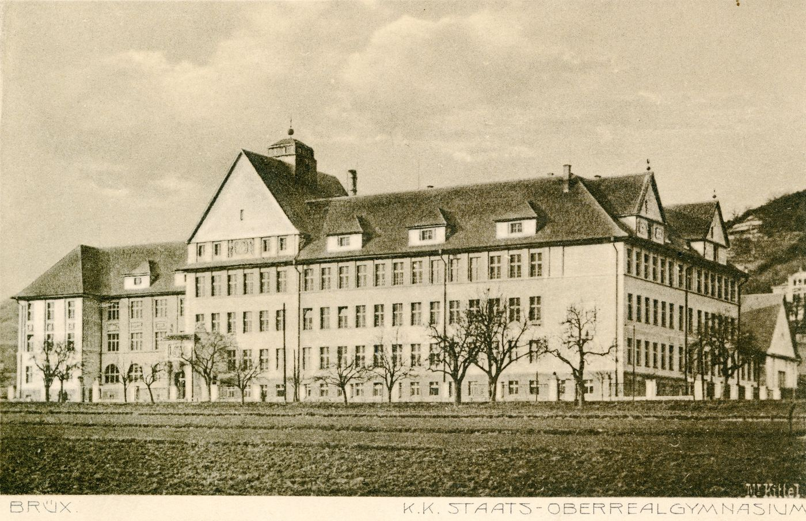
pohlednice
SHA-256 162d8f1d9bf2…

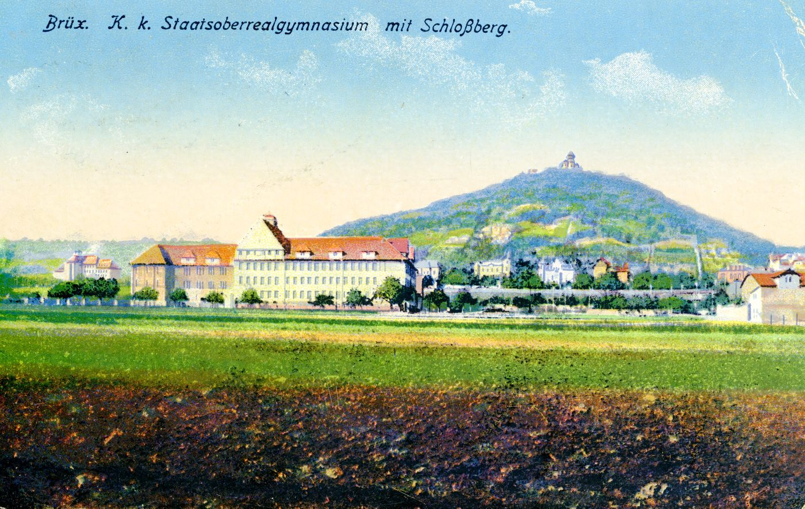
pohlednice
SHA-256 a8e066efc462…

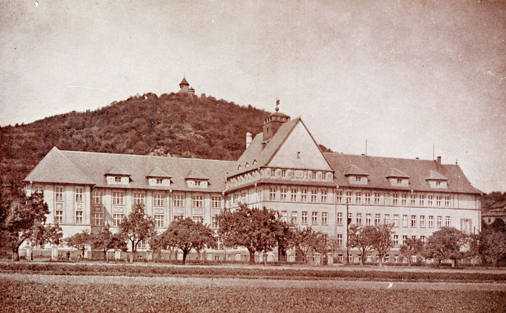
pohlednice
SHA-256 681dba49b9b4…

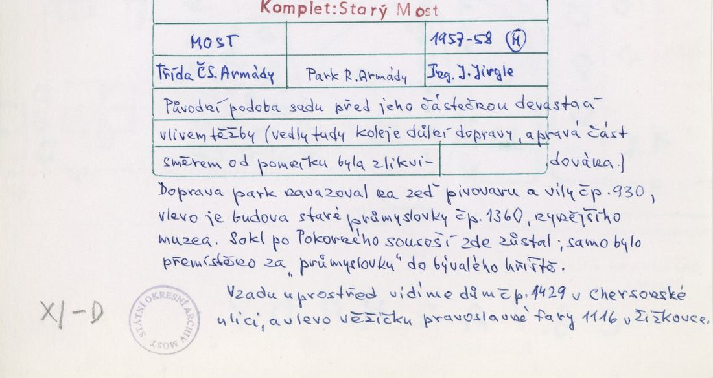
archivní karta (rub) · výřez textu
SHA-256 ad3835048fc0…
Model
| Revize modelu | r2 (zachované revize: r1, r2) |
|---|---|
| Poloha | GIS půdorys id 2937 |
| Šířka průčelí | 47,73 m |
| Výška okapu | 13,50 m (odhad) |
| Podlaží | 3 |
| Střecha podle pramenů | valbová, štíty, vikýře |
| Střecha v modelu | složená z valbových křídel |
| Otvory | 136 |
| Vikýře / vedlejší hmoty | 0 / 0 |
| Polygonů | 1735 |
Zdroje rozměrů, jak jsou zapsány v plánu modelu
| Rozměry | GIS id 2937 polygon (front 47.7 m, wings) |
|---|---|
| Průčelí | postcards P-000045/P-000593 (K.K. Staats-Oberrealgymnasium): 3 storeys, regular window grid, high hipped roofs with gable and dormers; photo cp_1360_001 |
| Střecha | massing hypothesis: constant-pitch straight skeleton 40 deg |
Kontrola: 10 povinných pohledů
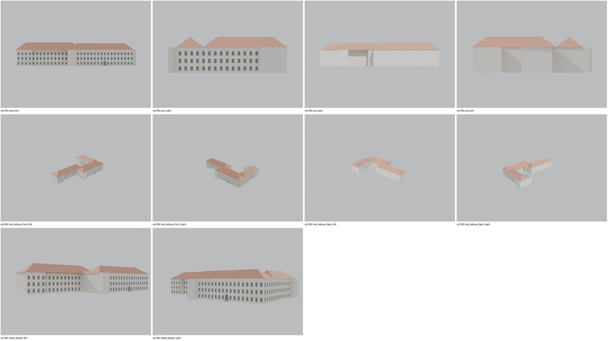
Nálezy
- r2: schody bez překryvu; čtyři valby (přední blok, pravé křídlo, spojovací trakt, levé křídlo) uzavřené valbovými konci do sousedních střech; 140 oken v rastru, vstupní oblouk; hmotová hypotéza bez štítu/vikýřů z pohlednic
Opravy
- r2: schody, křídla uzavřena valbami
Hypotézy
Vše níže je model_hypothesis, provisional, locked: false.
- hmotový model: výšky odhad (římsa 13,5 m), štít a vikýře zjednodušeny
- členění oken pravidelné, odhad
- window grid regular 2.6 m from postcard impression
- gable, dormers and roof lantern of the postcards not modelled
- all storey heights, opening sizes and roof pitches are estimates from photographs (model_hypothesis, provisional, locked=false)
- roof composed of four rectangular hips; junction valleys approximate
- wing roof ends at junctions closed as hips (valley junction approximated)
Soubory
- Model čp. 1360, GLB
- Pracovní složka: F:\MOST\output\zatecka_street_claude_2026-10-17\houses\cp1360\
plan_search.json,geometry_plan.json,README.md,texture_handoff_spec.json,r2/cp_1360_G_r2.blend,r2/qa/qa_review.json